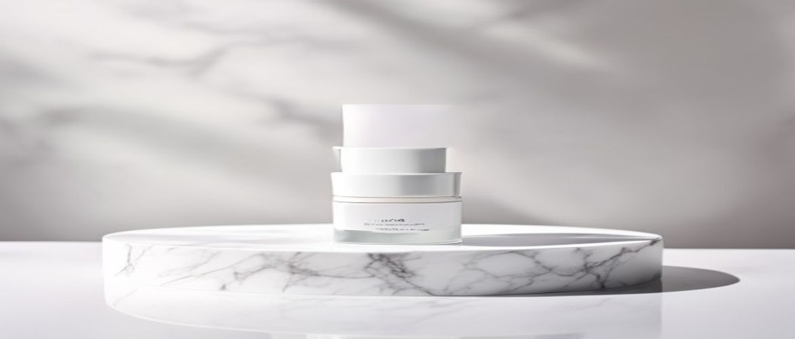

Navigating the vast landscape of clinical skincare can be challenging, especially when seeking targeted solutions for delicate areas. If you're wondering what makes the iS Clinical Youth Eye Complex stand out, you're in the right place to discover its profound benefits for revitalizing the skin around your eyes.
This advanced formula is engineered to address common concerns such as fine lines, wrinkles, dark circles, and puffiness, offering a comprehensive approach to maintaining youthful eye contours. Understanding its unique composition and application is crucial for integrating it effectively into your professional skincare routine.
The iS Clinical Youth Eye Complex is a sophisticated, clinical formula designed to deliver multi-faceted results, promoting a healthier and more radiant appearance around the eyes. Its unique blend of potent ingredients works synergistically to improve overall skin texture and resilience.
Dermatological studies often highlight the importance of targeted treatments for the eye area, as the skin here is significantly thinner and more susceptible to environmental damage and signs of aging. This complex offers a solution crafted with precision.
The iS Clinical Youth Eye Complex is ideal for individuals experiencing visible signs of aging around the eyes, including fine lines, wrinkles, dark circles, and puffiness. It is particularly beneficial for those seeking a medical-grade skincare solution to proactively combat these concerns.
Its gentle yet effective formulation makes it suitable for most skin types, including those with hypersensitive skin, as it is often dermatologist-tested and non-comedogenic. If you are committed to a professional skincare routine and desire noticeable improvements in your eye area, this product is designed for you.
Understanding the science behind the iS Clinical Youth Eye Complex reveals why it's a staple in many professional skincare routines, leveraging potent ingredients to enhance skin health and appearance. Each component is carefully selected to contribute to the overall efficacy and support the skin barrier.
The formulation prioritizes active ingredients that have been clinically shown to address the specific challenges of the delicate eye area, moving beyond superficial improvements to target cellular rejuvenation.
| Ingredient / Feature | Skin Benefit / Scent Role |
|---|---|
| Copper Tripeptide Growth Factor | Stimulates collagen synthesis, promotes healing, reduces appearance of fine lines. |
| Hyaluronic Acid | Deeply hydrates, plumps skin, improves elasticity, supports skin barrier function. |
| Acetyl Octapeptide-3 (SNAP-8) | Helps reduce muscle contractions responsible for expression lines, similar to Botox. |
| Pseudoalteromonas Ferment Extract | Supports collagen production, protects against dryness, promotes skin regeneration. |
Copper Tripeptide Growth Factor is a powerful bio-identical ingredient that plays a crucial role in wound healing and tissue regeneration. It stimulates collagen and elastin production, which are essential for maintaining skin firmness and elasticity, thereby reducing the appearance of wrinkles and improving skin texture.
This peptide also acts as an antioxidant, protecting the skin from oxidative stress and supporting the skin's natural repair processes. Its ability to promote cellular repair makes it an invaluable component in anti-aging formulations for the delicate eye area.
Clinical studies have shown that copper peptides can significantly improve skin density and reduce the depth of wrinkles by up to 30% over 12 weeks of consistent use.
Hyaluronic Acid is a renowned humectant, capable of holding up to 1000 times its weight in water, making it an exceptional ingredient for deep hydration. It draws moisture from the environment into the skin, plumping up the delicate eye area and smoothing out fine lines caused by dehydration.
Beyond hydration, hyaluronic acid helps to fortify the skin barrier, preventing moisture loss and protecting against environmental irritants. This sustained hydration contributes to a supple, healthy-looking skin texture and improved elasticity around the eyes.
To maximize the efficacy of the iS Clinical Youth Eye Complex, consistent and correct application is paramount. Incorporating it properly into your daily professional skincare routine ensures the delicate skin around your eyes receives optimal benefits.
Always remember that a small amount of this potent medical-grade skincare product goes a long way, and gentle application is key to avoid stressing the fragile eye area.
When using the iS Clinical Youth Eye Complex, avoid applying too much product, as this can lead to residue or potential irritation without enhancing results. Furthermore, refrain from rubbing or pulling the skin around your eyes forcefully, as this can contribute to premature wrinkling and skin laxity over time.
Ensure you are not applying the product too close to your inner lash line, which can cause discomfort or get into your eyes. Consistency is also vital; skipping days will diminish the potential benefits you could achieve with this clinical formula.
Always perform a patch test on a small area of skin before full application, especially if you have hypersensitive skin, to ensure no adverse reactions occur.
Like any advanced skincare product, the iS Clinical Youth Eye Complex offers a unique set of advantages and a few considerations. Weighing these can help you decide if this medical-grade skincare solution aligns with your needs and expectations for a professional skincare routine.
While the iS Clinical Youth Eye Complex is primarily designed to address existing signs of aging, it can also be used by younger individuals seeking preventative care. Its hydrating and antioxidant properties benefit all skin types, helping to maintain a healthy skin barrier and protect against future damage.
The iS Clinical Youth Eye Complex is highly effective at reducing the appearance of fine lines and moderate wrinkles due to its collagen-stimulating peptides and growth factors. For very deep-set wrinkles, it can significantly improve skin texture and overall appearance, though complete eradication may require professional in-office treatments.
Many users report noticing improvements in hydration and skin texture within a few weeks of consistent use. More significant reductions in fine lines, dark circles, and puffiness typically become visible after 8 to 12 weeks, as cellular regeneration and collagen synthesis require time.
Yes, the iS Clinical Youth Eye Complex is generally compatible with other active ingredients in your professional skincare routine, such as vitamin C serums or gentle retinoids. However, always introduce new products slowly and observe your skin for any signs of irritation, especially if you have hypersensitive skin.
Considering its advanced formulation, potent active ingredients, and comprehensive approach to eye area concerns, the iS Clinical Youth Eye Complex stands out as a highly effective medical-grade skincare solution. It delivers on its promises to reduce fine lines, diminish dark circles, and alleviate puffiness, contributing to a visibly more youthful and refreshed appearance.
For those committed to investing in a high-quality product that offers significant, clinically-backed results, the iS Clinical Youth Eye Complex is undoubtedly a worthwhile addition to your professional skincare regimen. Experience the transformative power of targeted clinical care and revitalize your eye area today.
Have questions or a comment on the post? Send us a message and we will get back to you soon.